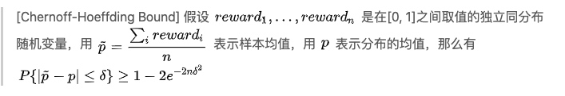
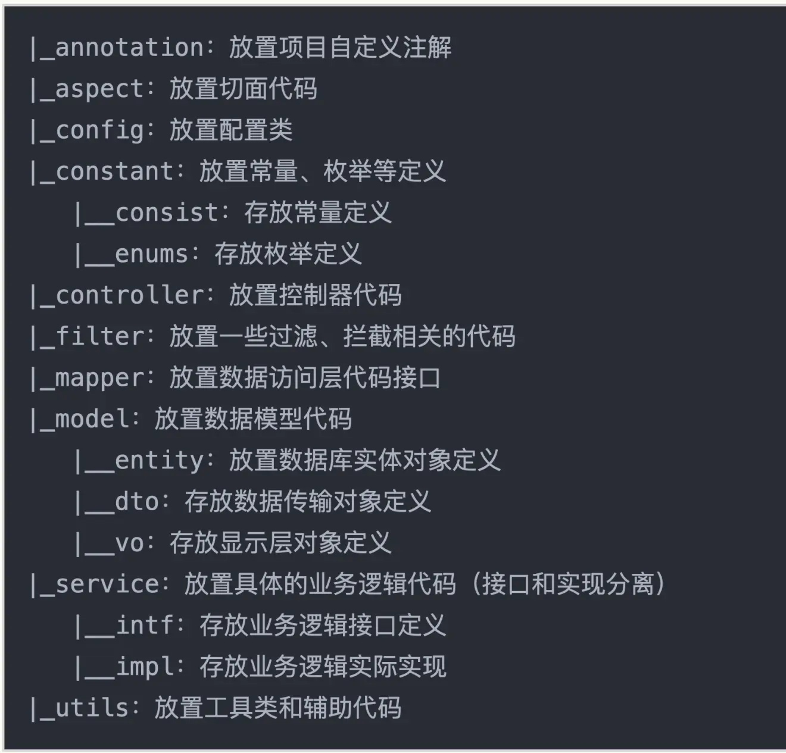
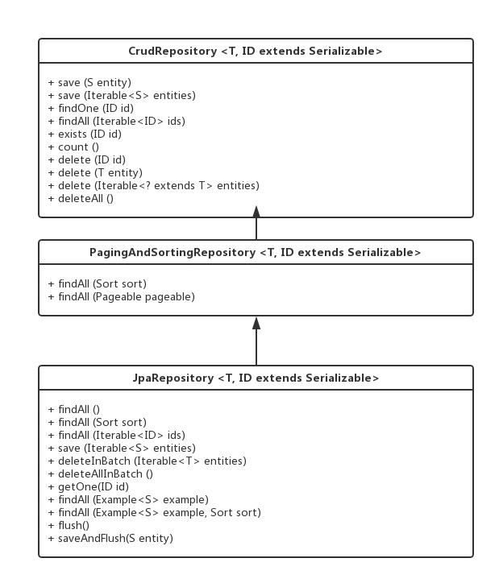

原理篇——模型融合
1. 模型融合
通过各种方法比如基于内容的，矩阵分解的等产生推荐结果后。每一种算法都会产生一些推荐结果，如何将推荐结果合并，做一个整体的排序？
一般是使用LR或者决策树的方式
2.FM
wise & deep 模型
google 2016
原理篇——MAB问题
多臂赌博机问题： 假设一个用户对不同类别的内容感兴趣程度不同，当推荐系统初次见到这个用户时，怎么快速地知道他对每类内容的感兴趣程度？这也是推荐系统常常面对的冷启动问题。 EE问题
bandit算法系列
参考：https://zhuanlan.zhihu.com/p/32335683
(1) epsilon-greedy
- 每次来了一个新客人后，以e的概率进行探索。从N道菜中随机选择一个让客人吃，然后根据反馈更新概率\((p_1,p_2,...p_N)\)
- 以1-e的概率利用，从N道菜中选择概率最高的一个推荐给用户
问题，上面的两个步骤对应着的两个问题
- 不管和好结果还是差结果，其在探索的时候概率都是一样的，这是不公平的
- 直接依据概率选择，会存在因为次数不同导致的置信度问题
（2）UCB
考虑推荐中某个阶段，我们有对各个物品偏好的估计\((p_1, p_2, ...p_N)\)以及每个物品被估计的置信次数。那么下一次推荐时候如何考虑概率以及置信度呢？
我们知道，样本估计与真值之间是存在误差的，即\(\hat p - △<= p <= \hat p + △\), 这里用置信上限作为其概率的估计
注意：当实验次数较少的时候，置信区间会比较大，即让少出现的物品多出现一些。从而解决了epsilon-greedy会出现的两个问题
△估计问题：

当\(\delta =\sqrt{2lnT/n}\) 时候，简化有
\[P{|\hat p - p|<=\sqrt{2lnT/n}}>= 1-\frac{2}{T^4}\]
zzz: 直接用比例的置信区间
\(△=z_{\alpha/2}\sqrt{p(1-p)/n}\)。 令\(2e^{-2n\sigma^2}=\alpha=5%\)。可以推算出来，在5%置信度下
UCB边界是\(\sqrt{1.844/n}\),而比例的置信区间是\(1.96\sqrt{p(1-p)/n}\)。即比例的置信区间求解出来的△要偏小一些。
（3）Thompson Sampling
UCB的缺点是:无法融合先验知识。 UCB是频率学派的方法，而Thompson Sampling是贝叶斯学派的
\[p(\theta|X)=p(X|\theta)p(\theta)\]
其中先验\(p(\theta)\)选择为\(Beta(\alpha, \beta)\)分布
maven
https://www.runoob.com/maven/maven-tutorial.html
Maven 是一个项目管理工具，可以对 Java 项目进行构建、依赖管理。Maven 也可被用于构建和管理各种项目，例如 C#，Ruby，Scala 和其他语言编写的项目。现为由 Apache 软件基金会主持的独立 Apache 项目。
标准目录结构
${basedir} 存放pom.xml和所有的子目录
${basedir}/src/main/java 项目的java源代码
${basedir}/src/main/resources 项目的资源，比如说property文件，springmvc.xml
${basedir}/src/test/java 项目的测试类，比如说Junit代码
${basedir}/src/test/resources 测试用的资源
${basedir}/src/main/webapp/WEB-INF web应用文件目录，web项目的信息，比如存放web.xml、本地图片、jsp视图页面
${basedir}/target 打包输出目录
${basedir}/target/classes 编译输出目录
${basedir}/target/test-classes 测试编译输出目录
Test.java Maven只会自动运行符合该命名规则的测试类
spring boot
Spring Boot不是一门新技术，所以不用紧张。从本质上来说，Spring Boot就是Spring,它做了那些没有它你也会去做的Spring Bean配置。它使用“习惯优于配置”（项目中存在大量的配置，此外还内置了一个习惯。
Spring将很多魔法带入了Spring应用程序的开发之中，其中最重要的是以下四个核心。
- 自动配置：针对很多Spring应用程序常见的应用功能，Spring Boot能自动提供相关配置
- 起步依赖：告诉Spring Boot需要什么功能，它就能引入需要的库。
- 命令行界面：这是Spring Boot的可选特性，借此你只需写代码就能完成完整的应用程序，无需传统项目构建。
- Actuator：让你能够深入运行中的Spring Boot应用程序，一探究竟。
spring boot与spring的区别 https://www.jianshu.com/p/ffe5ebe17c3a
1 目录结构
（1）Spring Boot 的基础结构共三个文件夹:
src/main/java：程序开发文件夹，我们的在这里写程序代码。
src/main/resources：配置文件
src/test/java：测试程序
（2）src/main/java下的DemoApplication.java
主要作用就是主程序的入口，相当于main函数。
（3）src/main/resources下的static
里面保存了一些配置资源，比如图片等等。
（4）src/main/resources下的application.proties
它是全局配置文件，在这里定义一些接口的端口号等等各种信息。
（5）pom文件
这个文件极其重要，他定义了一些项目的依赖信息，
（6）mvnw和mvnw.cmd
一个是在linux下的shell执行脚本，一个定义了在windows下的bat执行脚本

大体的目录结构类似于

- entity
持久化，与数据库对应；实体bean，一般是用于ORM对象关系映射，一个实体映射成一张表，一般无业务逻辑代码。
负责将数据库中的表记录映射为内存中的Entity对象，事实上，创建一个EntityBean对象相当于创建一条记录，删除一个EntityBean对象会同时从数据库中删除对应记录，修改一个Entity Bean时，容器会自动将Entity Bean的状态和数据库同步
- DTO
数据传输对象（Data Transfer Object）
dto是做表示层（展示给用户）的，而实体是数据对象（表）。表示层dto的是由多个实体构成，或一个实体的一个部分，或多个实体的各个部分的结合体？如果你认为dto没有必要，难道你做数据库的时候，表与页面的展示是一摸一样的吗？不太现实吧。
dto是面向对象的，实体是面向关系数据库。
repository
repository 处于业务层和数据层之间，在他的的内部封装了数据查询和存储的逻辑。
repository有三种接口可以方便开发者操作数据库.
https://segmentfault.com/a/1190000012346333CrudRepository 执行基本的CRUD操作
PagingAndSorting 增加了分页和排序功能
JpaRepository则在上面的基础上又扩展了一些功能：查询列表，批量删除，强制同步，example查询

2.环境配置
推荐使用IntelliJ IDEA
vscode配置
- 安装spring boost extension pack
3.入门
入手资源
https://zhuanlan.zhihu.com/p/150513285
demo案例 https://zhuanlan.zhihu.com/p/75144914
(1) spring-boot-demo
https://github.com/xkcoding/spring-boot-demo
(2)SpringBoot-Labs
https://github.com/YunaiV/SpringBoot-Labs
lombok
@Data
提供所有属性的get和set方法
@Log4j
为类提供一个 属性名为 log 的 log4j 日志对象，提供默认构造方法。
@Value
这个注解用在 类 上，会生成含所有参数的构造方法，get 方法，此外还提供了equals、hashCode、toString 方法。
项目启动
M1:
recbee
aop # 对于我们开发中最常见的可能就是日志记录，事务处理，异常处理等等。
controller # https://www.jianshu.com/p/ea512f634fd6
Copyright © 2015 Powered by MWeb, Theme used GitHub CSS.